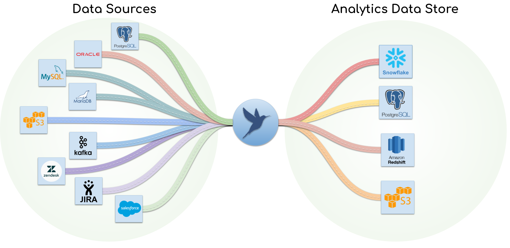

Documentation
PipelineWise is a Data Pipeline Framework using the Singer.io specification to ingest and replicate data from various sources to various destinations.
Features
Built with ELT in mind: PipelineWise fits into the ELT landscape and is not a traditional ETL tool. PipelineWise aims to reproduce the data from the source to an Analytics-Data-Store in as close to the original format as possible. Some minor load time transformations are supported but complex mapping and joins have to be done in the Analytics-Data-Store to extract meaning.
Lightweight: No daemons or database setup are required
Replication Methods: Log-Based (CDC), Key-Based Incremental and Full Table snapshots
Managed Schema Changes: When source data changes, PipelineWise detects the change and alters the schema in your Analytics-Data-Store automatically
Load time transformations: Ideal place to obfuscate, mask or filter sensitive data that should never be replicated in the Data Warehouse
YAML based configuration: Data pipelines are defined as YAML files, ensuring that the entire configuration is kept under version control
Extensible: PipelineWise is using Singer.io compatible taps and target connectors. New connectors can be added to PipelineWise with relatively small effort
Beyond the Horizon
PipelineWise is built on top of several Singer.io components. Singer.io components are responsible for certain tasks like extracting data from a specific data source or loading data into a specific destination, however to replicate data end to end you’ll need an extra layer on top of these components to run the jobs, create configurations, select streams to replicate, do logging and more.
This is where PipelineWise comes in place. PipelineWise is a collection of pre-selected singer taps and targets to add the required functionalities to create, run and maintain data pipelines in a production Data Warehouse environment without the extra hassle.
Taps (Data Source Connectors)
Target (Destination Connectors)
Transformation at load time
Content
Installation
Concept
Using PipelineWise